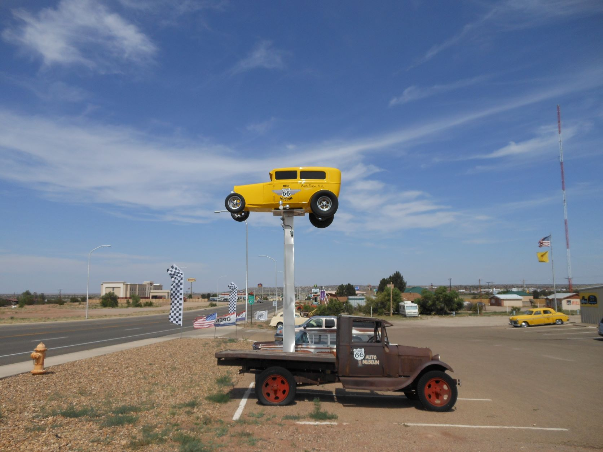
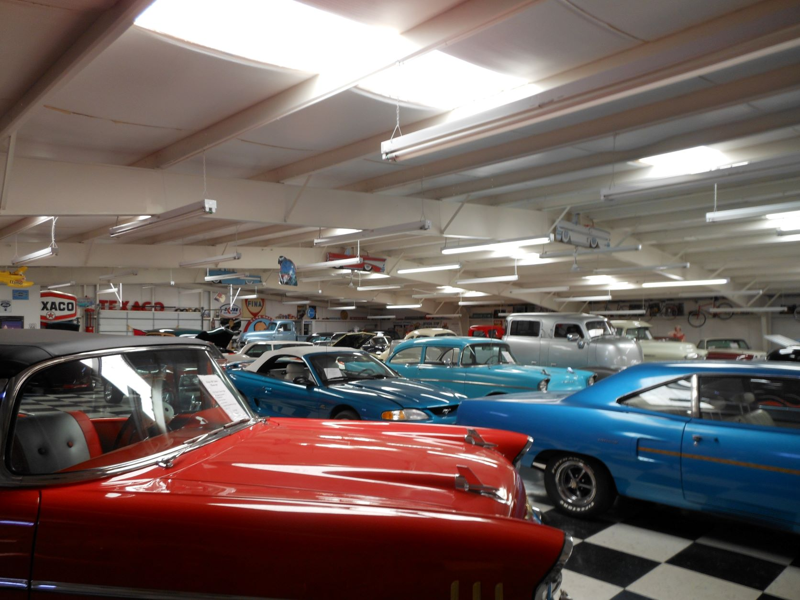
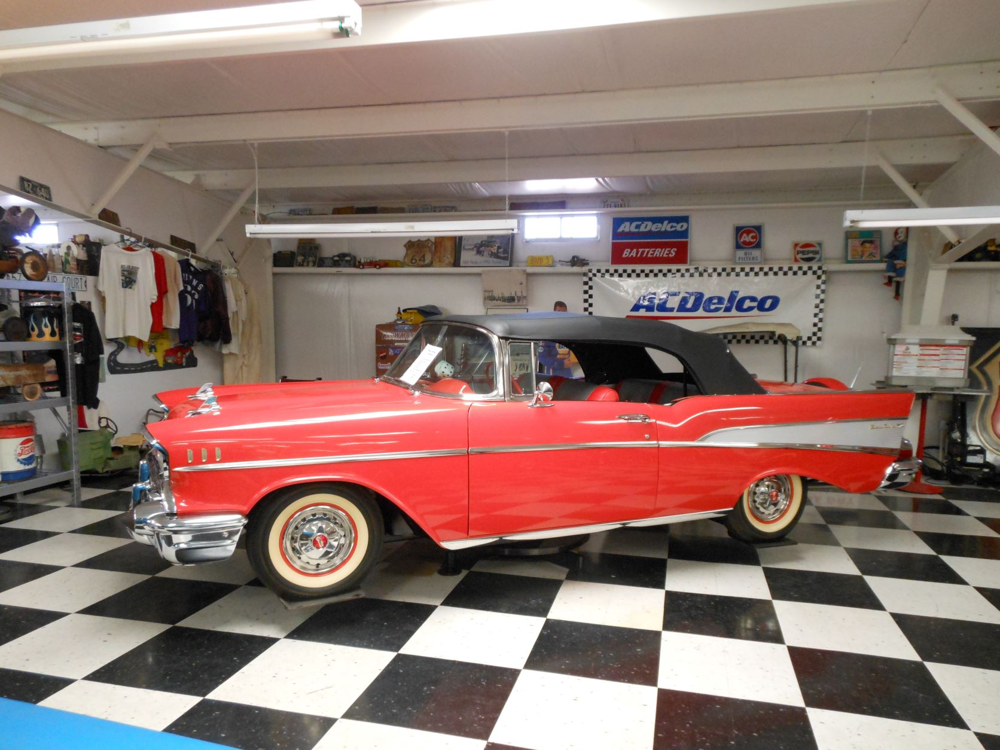
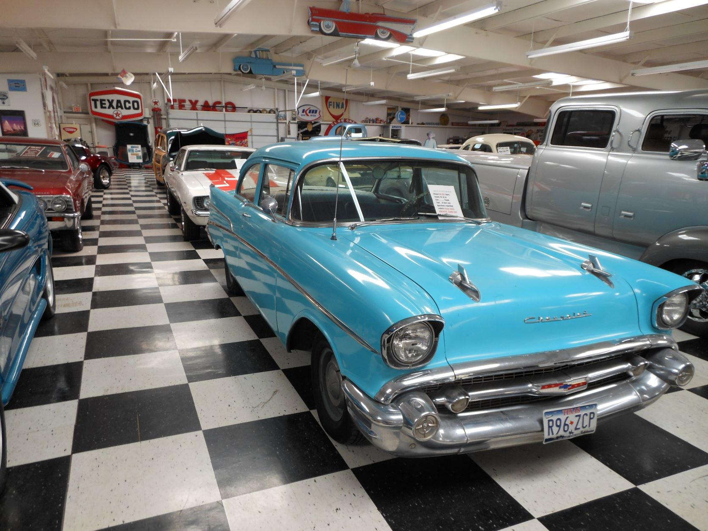
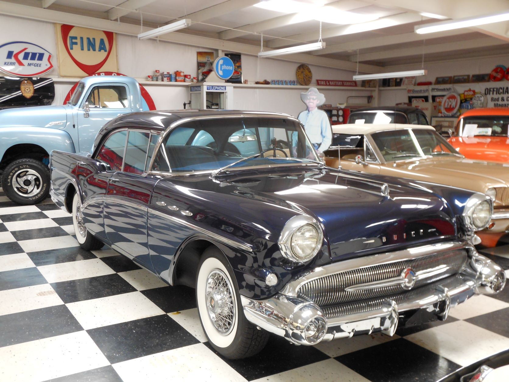

June 13, 2012 - Santa Rosa, NM

Yellow Deuce Coup sign - Route 66 Auto Museum - Santa Rosa, NM

Car collection - Route 66 Auto Museum - Santa Rosa, NM

Red Chevy Belair convertible - Route 66 Auto Museum - Santa Rosa, NM

Faded green Chevy Belair (like Dad used to have.) - Route 66 Auto Museum - Santa Rosa, NM

Black buick with whitewall tires - Route 66 Auto Museum - Santa Rosa, NM